故事的开头
一个暴风雨的夜晚，一阵龙卷风把小鼹鼠从地洞小屋里卷上了天。等他醒过来，身下是一张张卡牌——这里是卡牌世界。
可是这个世界没有颜色。花是灰的，小鸟是灰的，连哭鼻子的小刺猬也是灰的。大家说，是一团影子干的：它们从宇宙深处的黑洞里来，把整个世界的颜色都偷走了。
影子逃走的时候撞倒了鼹鼠，地上只留下一支试管，里面还剩一点点绿。
于是小鼹鼠举起试管，向八个世界出发。每走过一个世界，就把一种颜色找回来。
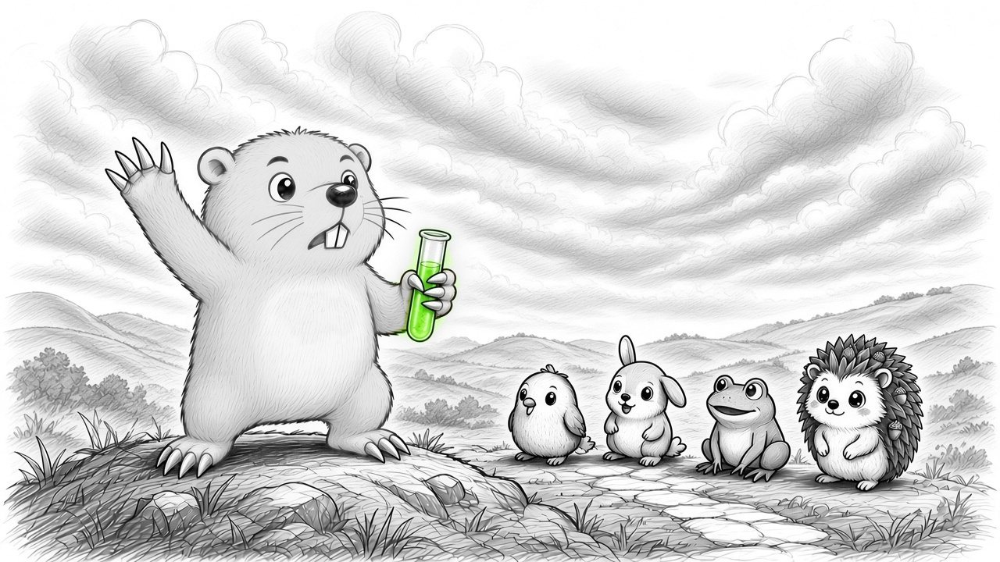
八个世界
世界卡平时是黑白的。把鼠标放上去（手机上点一下），看看颜色回来时的样子。
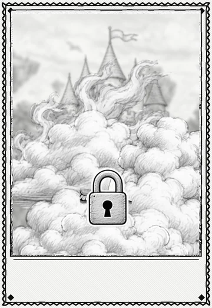
？？？
隐藏世界
云雾里好像有一座尖尖的城堡……谁也去不了。
开场漫画 · 全 17 格
前三格的地球是彩色的；到了卡牌世界，一切都变成黑白，只有被偷走的颜色和试管里的绿还亮着。
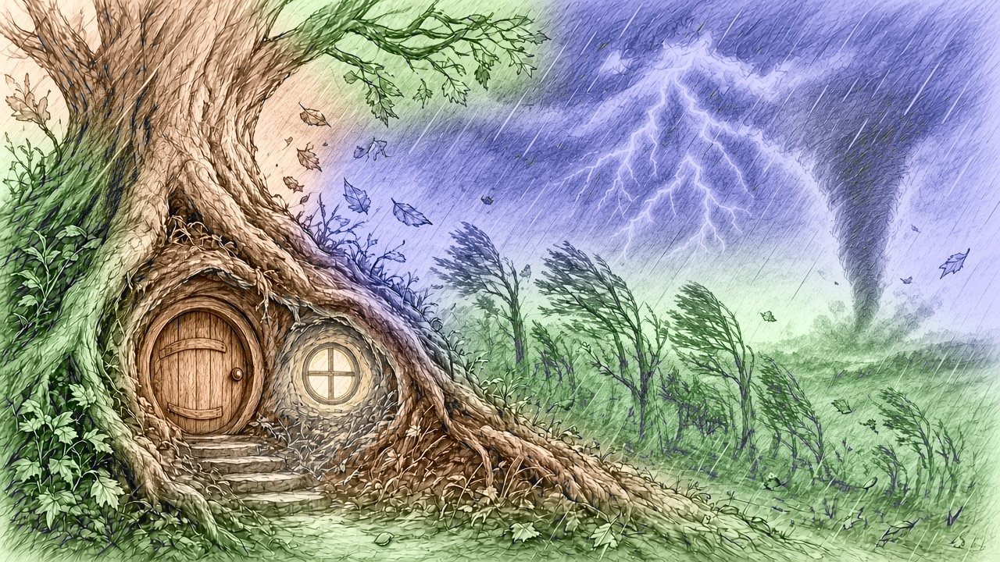
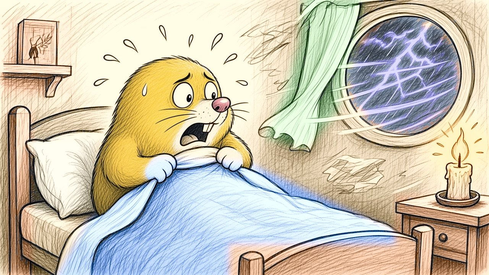
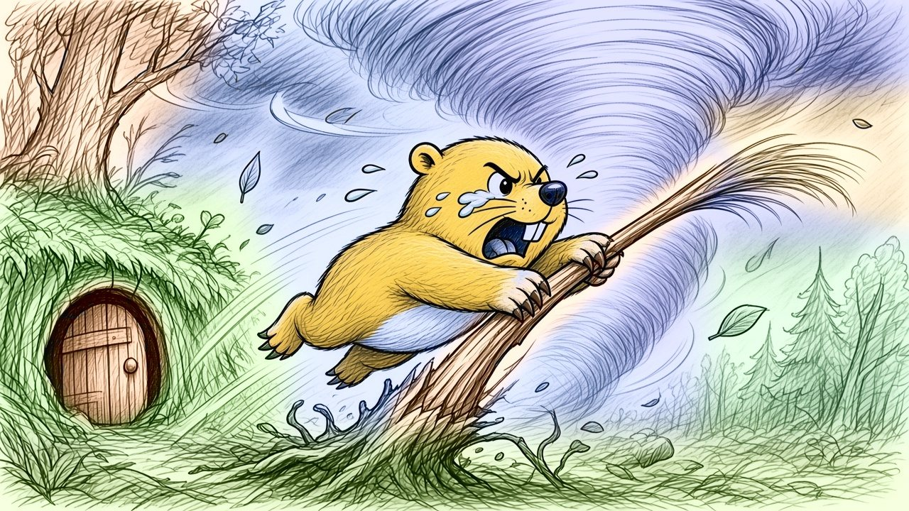
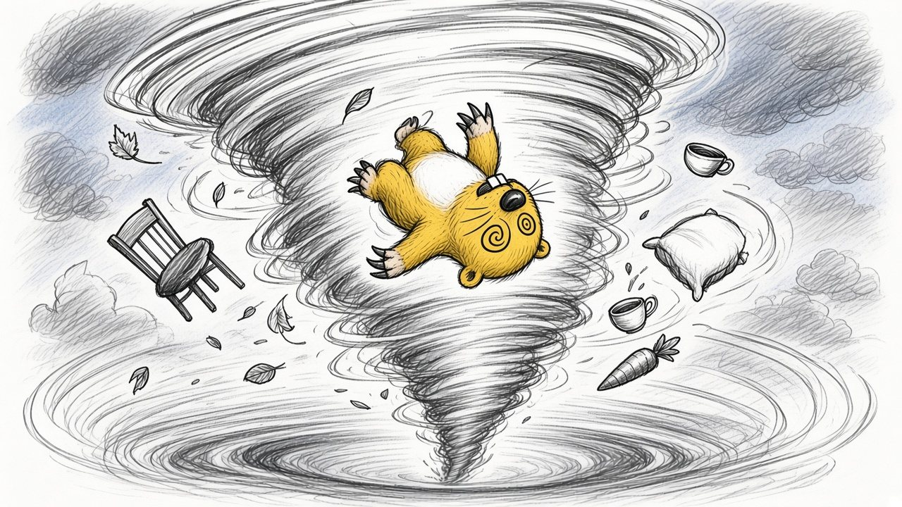
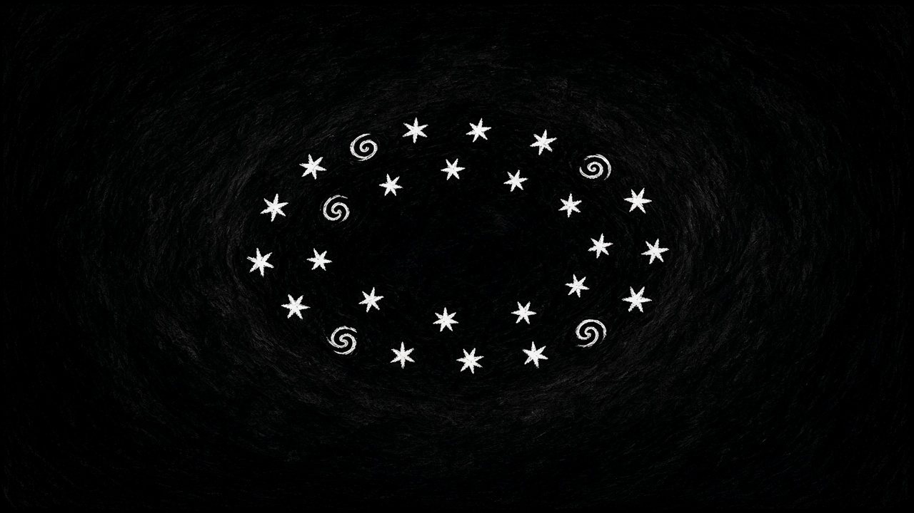
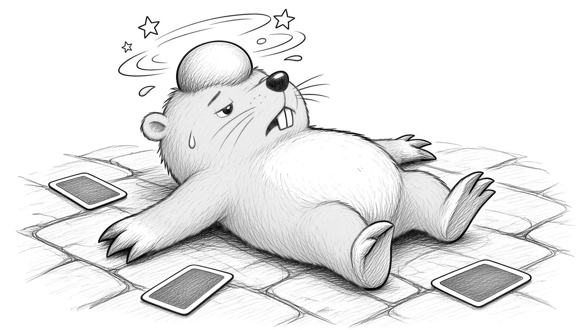
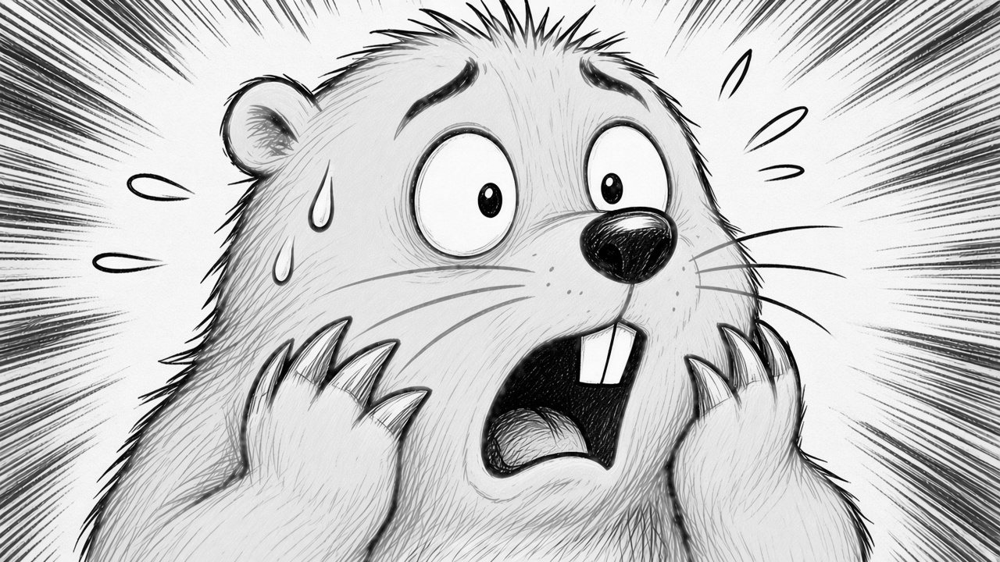

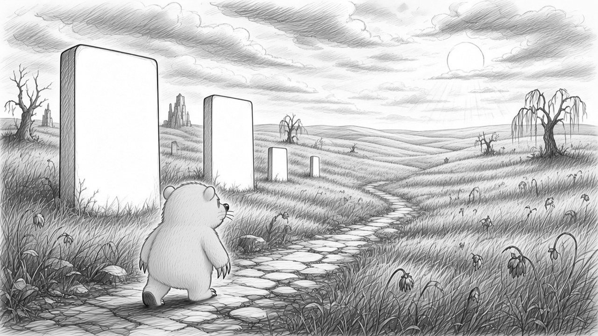
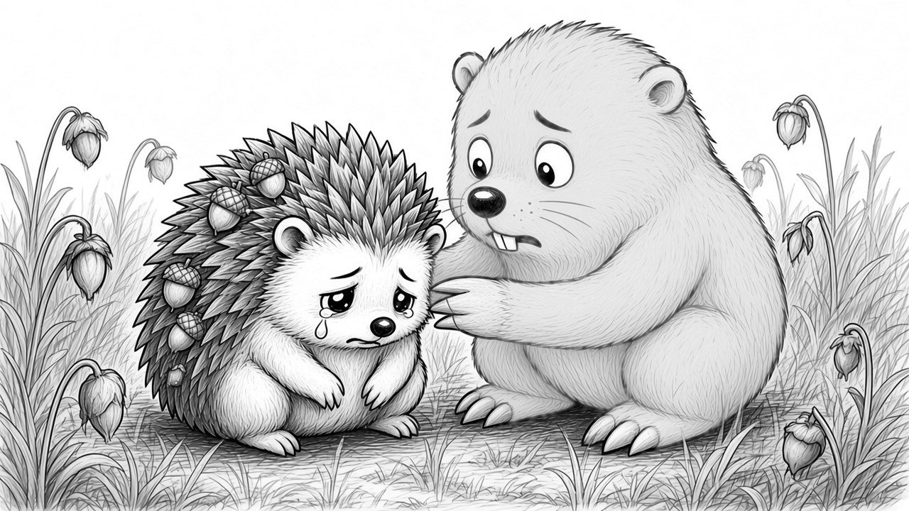
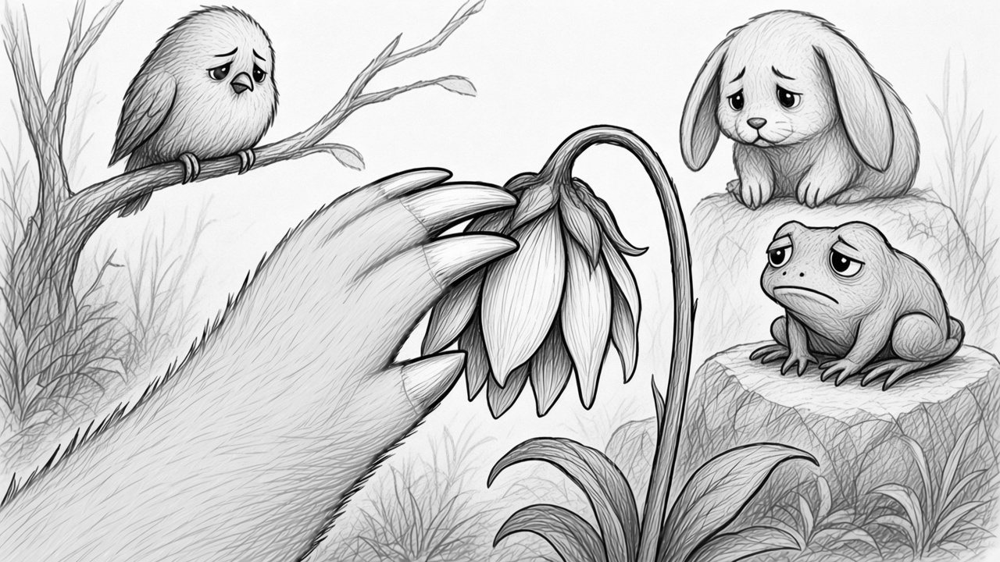
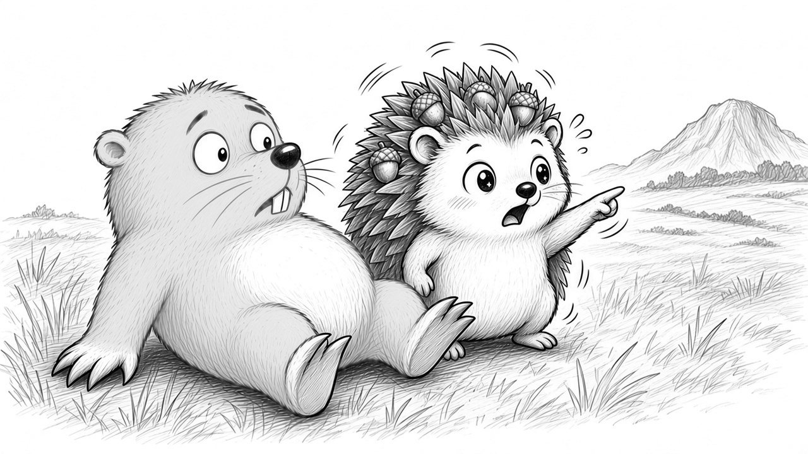
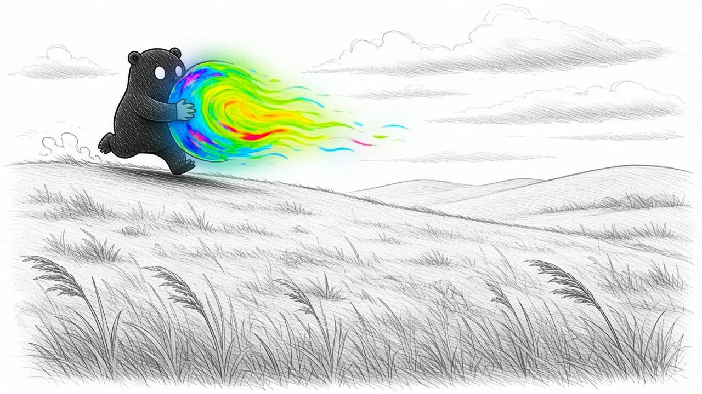
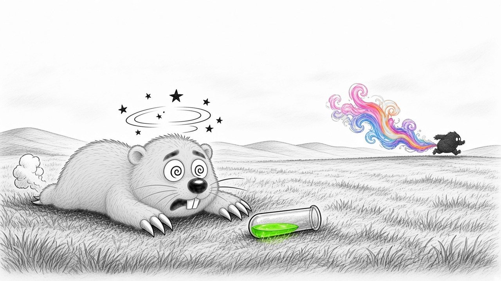
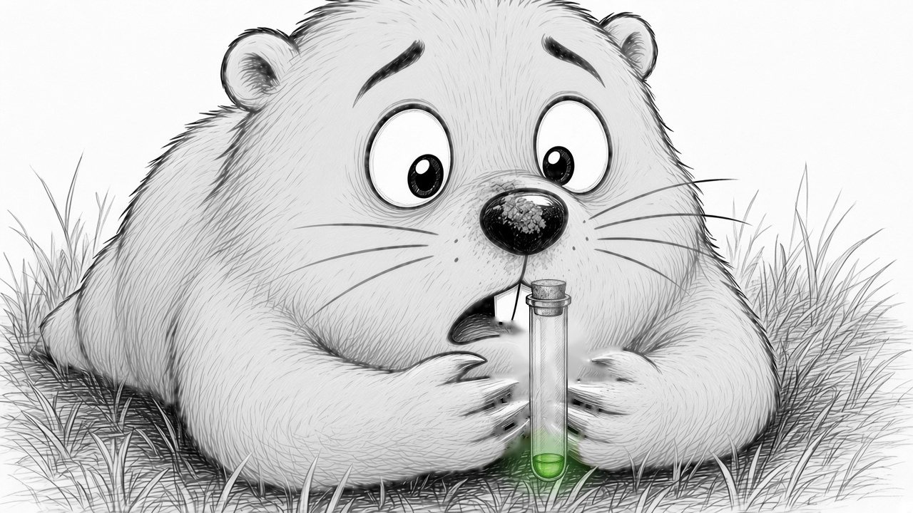
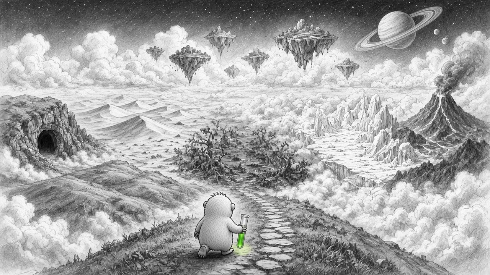